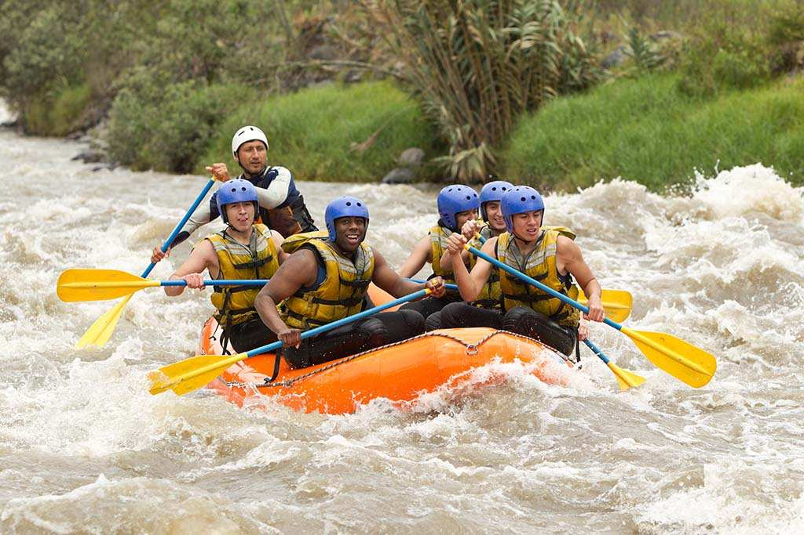

Want to start living?
Want to start living?
Look at all of these adventures that are to die for!
Book a trip now!
Contact us to start one of these adventures


Adventure Details
| Adventure | Trip Length | Cost Per Person** | Death Rate (%) |
|---|---|---|---|
| Learn to Paddle | 1/2 day | $500 | 1 |
| Babies First Adrenaline Hit | 1 day | $500 | 1 |
| Death by Drowning | 1 day | $20,000 | 60 |
| Slowly Sinking | 3 days | $60,000 | 70 |
| No Escape, Blind River | 7 days to 1 month | $200,000 | 95 |
*No refunds for adventures starting 24hrs in advance. No refunds for bad weather,
that
just makes it more exciting. No refunds for good weather, even if it makes it less
exciting. Complaining to tour guides will incite a $50 fine per incident. By booking
an adventure through Death Wish Rafting Company all participants acknowledge that
there is a chance that death comes to us all and it's not our fault. No being a
pansy and suing us.
This is a fake website if you can't tell.
**Reason for
high prices are the insurance companies fault, not ours. Something about payouts to
death benefices.